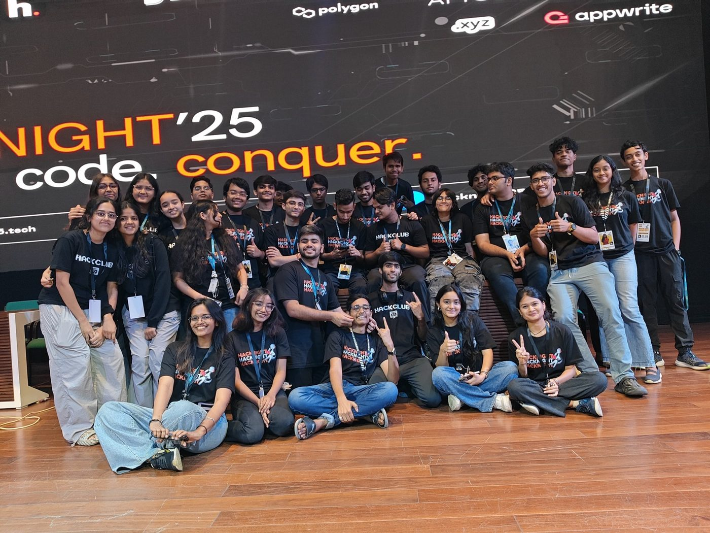
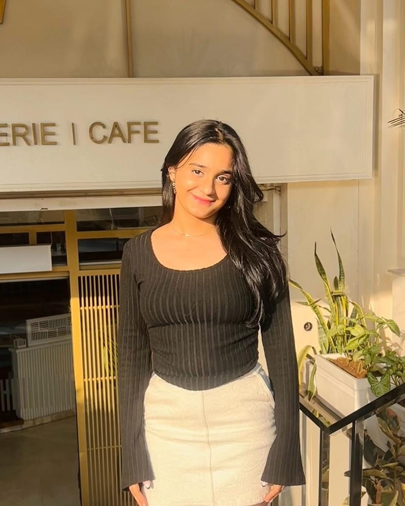
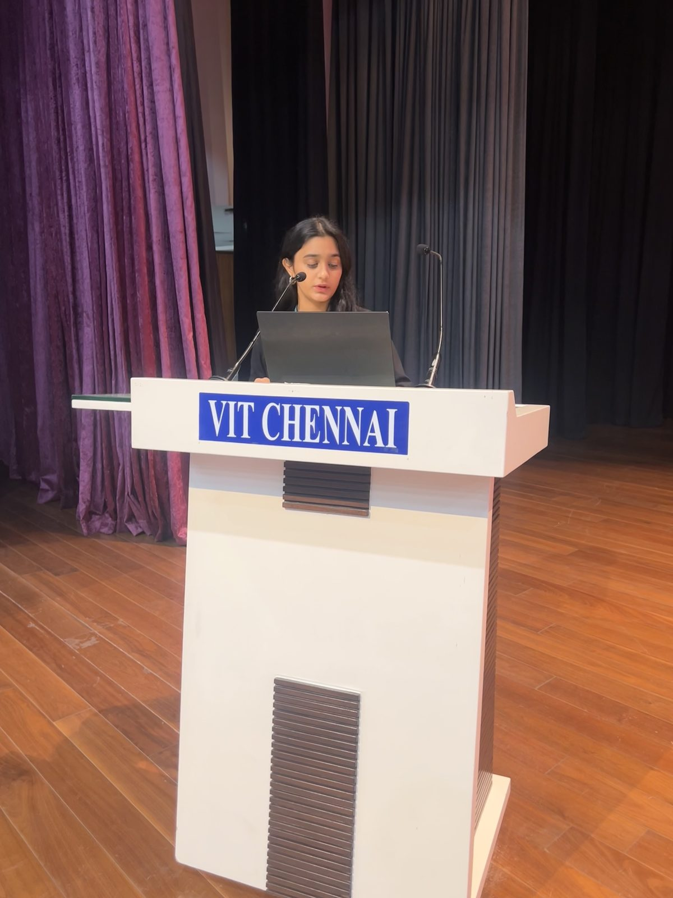
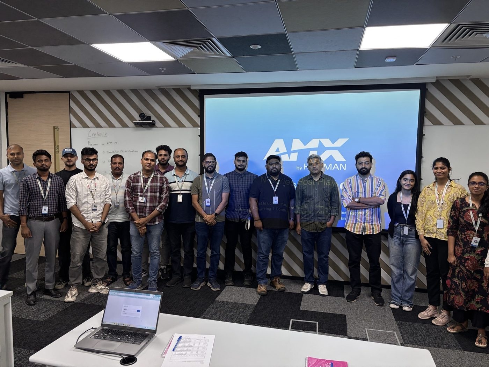
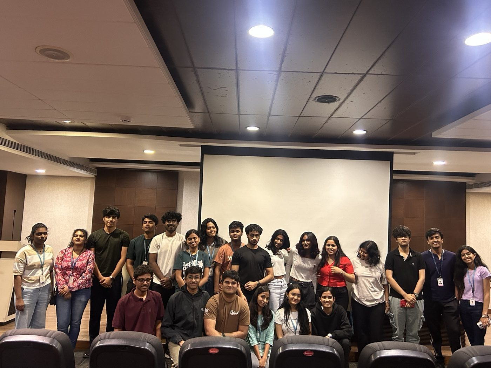
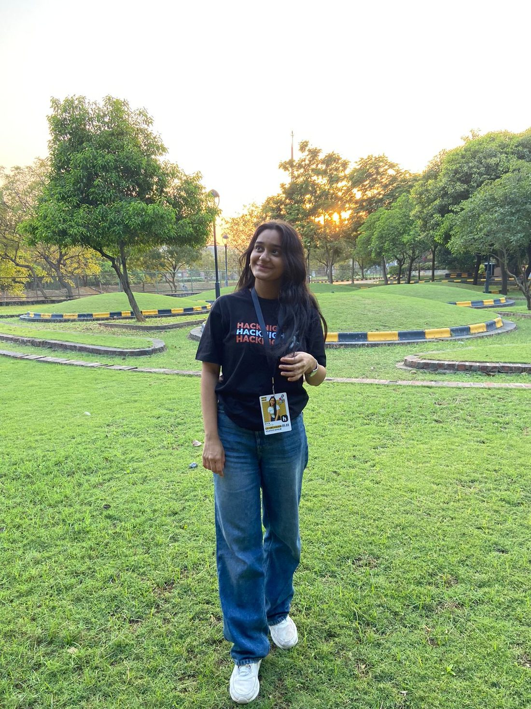

2025–26
Hack Club · student communities
From operations and organising to bringing people together for events, this is where I learnt that building communities is its own kind of engineering.

I’m a computer science student
a little corner of the internet that feels like me.
I like building useful things, understanding how systems work, and turning messy ideas into something people can actually use. I also love cooking up good food and good stories.
chennai · --:-- · probably building something

I’m a Computer Science student at VIT Chennai. I enjoy the space where software, data, product thinking and people overlap.
I’ve spent the last few years building projects, interning, organising student communities, speaking on stage, and occasionally figuring things out five minutes before they need to work.
This portfolio is less “hire me” and more “here’s what I’ve been curious about, what I’ve made, and the people I’ve built it with.”
saanvi’s receipts
so far · no refunds ♡
thank you, come again ✦

From operations and organising to bringing people together for events, this is where I learnt that building communities is its own kind of engineering.

Worked on an internal learning platform and reporting workflows — a mix of software, data, product context and understanding how real teams actually use systems.

Worked around data processing, operational workflows, access controls and large-scale systems — the kind of work that made “software at scale” feel much more real.
One of the spaces where I grew into leadership more intentionally — working with people, coordinating responsibilities, and learning that communities are built through consistency, not just big moments.

Learning, building, interviewing, experimenting, and trying not to turn every idea into a side project.
No skill bars or percentages — just what I’ve actually used to build the things below. Tap a tab to reshuffle the stickers.
Not every project has to be groundbreaking. I care more about whether I understood something better after building it.
A React, Node and MongoDB system for issue/return workflows, recommendations, notifications and usage analytics.
A women-safety emergency system with live location, multi-tier SOS escalation, risk zones and offline fallback.
A sign-language translation semester project that recognises hand gestures and turns them into text in real time.
Real-time sensor streams, anomaly detection and alerting — built to understand what practical ML systems need beyond a model score.
One of the stranger sentences I can now say about my undergraduate life.
psst — you can drag these around ♡
tap a photo to make it wiggle ♡

hover a card — some of my favourite quotes on the back.
tap a card — some of my favourite quotes on the back.
thanks for being here ♡
This page will keep changing as I do. Leave a note, or find me here: